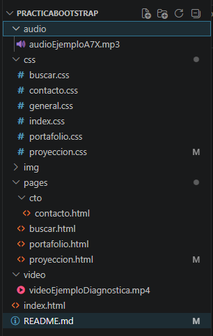
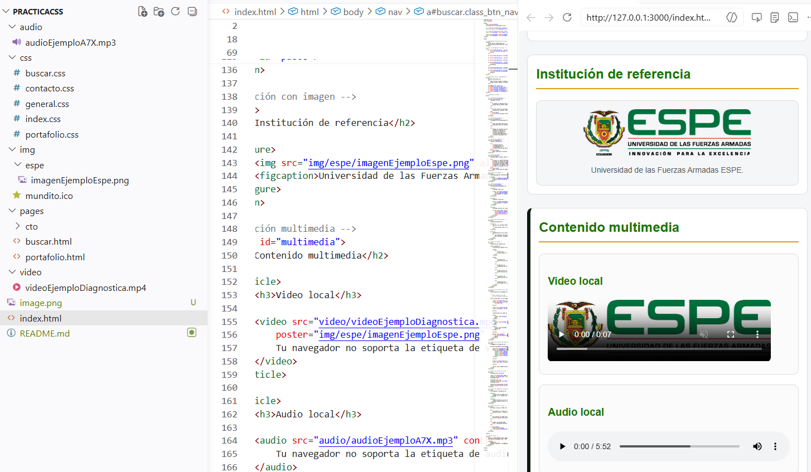

Proyección 2034
En diez años seré un profesional del desarrollo web con experiencia en proyectos accesibles, liderazgo de equipos y soluciones con impacto social. Esta página recoge mis metas personales, académicas y profesionales usando Bootstrap 5.

Proyección personal
Balance de vidaQuiero desarrollar hábitos que me permitan aprender nuevas tecnologías sin descuidar la salud mental, la creatividad y las relaciones personales. Mi proyección incluye viajar a eventos internacionales y formar parte de comunidades tecnológicas.
- Rutina de estudio constante con tiempo para hobbies.
- Participar en conferencias y comunidades de tecnología.
- Mantener el aprendizaje constante con proyectos reales.
Valores personales
Empatía, disciplina y curiosidad, aplicados en cada proyecto y en la vida diaria.
Ver habilidadesProyección académica
Formación continuaAprendizaje estructurado
Consolidar conocimientos en ingeniería, diseño web y nuevas tecnologías con un enfoque en accesibilidad y experiencia de usuario.
Título
Completar estudios superiores en tecnología o diseño digital.
Certificaciones
Obtener certificaciones en Bootstrap, accesibilidad y desarrollo frontend.
Proyectos
Desarrollar proyectos que demuestren mi capacidad para resolver problemas reales.
Proyección profesional
Carrera técnicaRol ideal
Liderar equipos y diseñar experiencias digitales accesibles, combinando desarrollo web con un enfoque humano.
Impacto
Crear soluciones que ayuden a comunidades diversas a acceder a recursos educativos y tecnológicos.
Metas a 10 años
Visión claraPersonal
Mantener equilibrio entre crecimiento profesional y tiempo libre para la creatividad.
Académica
Completar estudios avanzados y sumar experiencias prácticas que refuercen mi portafolio.
Profesional
Convertirme en un profesional capaz de liderar equipos multidisciplinarios.
Herramientas y habilidades
Progreso actual
Uso Bootstrap para crear layouts claros, móviles y accesibles.
Galería de ideas

